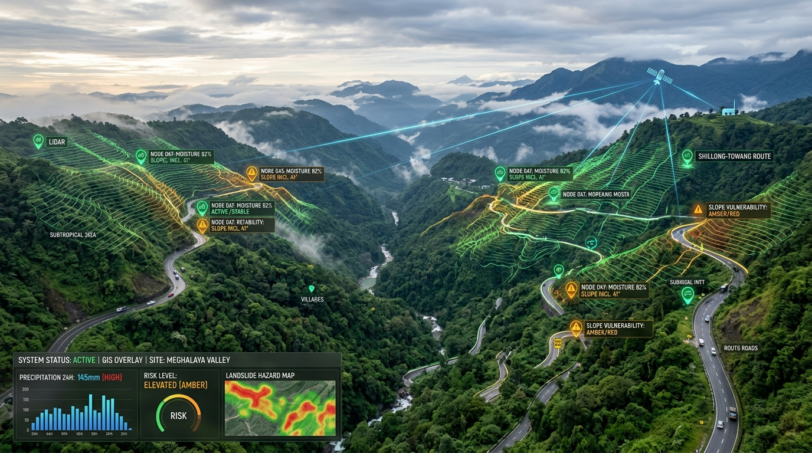

AI-Based Early Warning &
Landslide Monitoring System
A Smart Decision-Support Platform for Monitoring Landslide Risks and Supporting Disaster Response in the North Eastern Region of India.

Engineered for High-Stakes Disaster Response
Built specifically for the unique geological thrust belts, heavy monsoonal precipitation, and fragile highway lifelines of Northeast India.
AI Risk Analysis
Dynamic assessment fusing real-time rainfall, soil moisture, slope gradient, and historical landslide hazard indices.
Live Risk Mapping
GIS-powered geospatial dashboard highlighting active risk zones across Assam, Meghalaya, Sikkim, Nagaland, and Arunachal.
Early Warning Alerts
Multi-tier alerts categorized into Low, Moderate, High, and Critical with actionable recommendations for district authorities.
Connectivity Impact Analysis
Identifies road disruptions, calculates village isolation risk, and computes alternative emergency bypass routes.
Offline Field Reporting
Enables frontline field officers and remote citizens to file hazard reports offline with automated cloud synchronization.
Explainable AI (XAI) Attribution
Transparent factor contributions explaining precisely WHY risk is high, giving commanders defensible decision justification.
End-to-End Decision-Support Pipeline
From environmental telemetry ingestion to rapid emergency corridor activation.
Welcome to AlertNex Command Center
Real-Time Landslide Risk Monitoring & Decision-Support Platform | North Eastern Region
High landslide risk detected • Possible road disruption identified
Location: Demo Monitoring Zone A (East Khasi Hills, Meghalaya) • Potential NH-206 cutoff • Recently Updated
North Eastern Region Interactive Risk Map
GIS-Based Geospatial Visualization of Landslide Hazard Zones, Roads, and Community Lifelines
AI Risk Assessment Engine
Multi-Factor Hazard Risk Modeling with Explainable AI (XAI) Factor Attribution & Parameter Sensitivity
Score = [Rainfall(30%) + Moisture(25%) + Slope(20%) + History(15%) + FieldReports(10%)] × WeatherMultiplier
Connectivity Impact Intelligence
Core AlertNex Innovation: Moving beyond hazard identification to evaluate systemic road disruptions, isolated villages, and emergency detour routes.
| Road / Corridor | Status | Priority | Mitigation |
|---|
| Village | Isolation Level | Primary Cutoff Cause | Alternate Access |
|---|
Early Warning & Alert Management
Active Landslide Bulletins, Notification Routing, and Inter-Agency Escalation
Report a Landslide Hazard
Citizen & Field Officer Crowdsourced Reporting with Offline Local Storage Synchronization
In remote NER valleys where mobile connectivity is severed, AlertNex caches reports in client-side IndexedDB / LocalStorage. Once connectivity resumes, reports are dispatched automatically.
Analytics & Monitoring Reports
Historical Hazard Intelligence, Precipitation Correlation, and Formal Decision Briefings
How AlertNex Works
High-Level System Architecture, Data Pipelines, AI Risk Algorithms & Technical Specifications
Technology Stack & Architecture Audit
1. Current Prototype Implementation (Actually Used)
FRONTEND
- HTML5 Semantic Architecture
- Modern Vanilla CSS (Design Tokens)
- Modular ES6+ JavaScript
- Chart.js Visualizations
GIS & MAPPING
- Leaflet GIS Engine
- CartoDB Topographic Tiles
- GeoJSON Spatial Layers
- Custom SVG Marker Overlays
BACKEND & APIS
- Python 3.12+
- FastAPI REST Framework
- Uvicorn Asynchronous Server
- Pydantic Schemas
RISK ENGINE (PROTOTYPE)
- Python NumPy & Pandas
- Transparent Weighted Formula
- Rule-Based Factor Attribution
- NER Geotechnical Baseline
DATABASE & STORAGE
- SQLite (Embedded Demo DB)
- SQLAlchemy ORM Models
- GeoJSON Vector Topologies
- PostGIS Architecture Ready
OFFLINE & MESSAGING
- IndexedDB Client Persistence
- LocalStorage Queue Fallback
- SMTP Emergency Email Dispatch
- Simulated Multi-Channel Gateway
2. Demo / Simulated Components
ENVIRONMENTAL DEMO TELEMETRY
- Synthetic 24-Hour Rainfall Precipitation Curves
- Calibrated Soil Moisture Saturation Levels
- Simulated Diurnal Humidity & Temperature Variations
- No physical IoT sensors active in demo hall
PROTOTYPE MONITORING ZONES
- 4 Pre-Calibrated NER Demonstration Sectors
- Cherrapunji, Haflong, Gangtok & Kohima
- Simulated Road Disruption Corridors (NH-206, NH-27)
- Synthetic 10-Step Professor Incident Walkthrough
3. Planned Future Integrations (Phase 2 Roadmap)
REMOTE SENSING & WEATHER APIS
- Sentinel-1 InSAR Surface Creep Interferometry
- Copernicus Sentinel-2 Optical Moisture Indices
- India Meteorological Department (IMD) AWS Live Feeds
- Live Physical MEMS/Piezometer IoT Sensors
ENTERPRISE CLOUD & ML
- PostgreSQL 16+ & PostGIS Spatial Engine
- Trained XGBoost / Random Forest ML Ensembles
- SHAP (SHapley Additive exPlanations) Model Explainability
- Redis Telemetry Cache & Firebase Cloud Messaging
Data Sources & Integration Status
Current Prototype Status & Limitations
AlertNex is an applied hackathon prototype engineered for college-level and national demonstration. In adherence to strict academic honesty and Smart India Hackathon evaluation guidelines, the current prototype operational parameters are explicitly clarified below:
⚠️ Prototype Environmental Data
Rainfall and soil moisture telemetry values are simulated or pre-calibrated baseline figures designed to demonstrate dynamic multi-parameter risk calculation without requiring live physical IoT sensors in the competition hall.
⚠️ Prototype Risk Assessment Engine
The current risk calculation uses a transparent weighted prototype engine (Rainfall 30%, Moisture 25%, Slope 20%, History 15%, Reports 10%) calibrated to NER topography. Heavy complex ML ensembles remain planned future work.
⚠️ Limited Monitoring Sectors
Four primary demonstration sectors (Cherrapunji-Mawsynram, Haflong-Jatinga, Gangtok-Tsomgo, Kohima-Dimapur) are currently configured to showcase regional variability across Meghalaya, Assam, Sikkim, and Nagaland.
⚠️ Satellite Remote Sensing (Future)
Sentinel-1 InSAR surface deformation tracking and Copernicus earth-observation feeds are architecturally designed for Phase 2 scaling but are not connected as live real-time feeds in this prototype.
⚠️ Decision-Support Only
Alternative route suggestions and road disruption alerts are algorithmic prototype decision-support recommendations. They do not constitute official statutory evacuation orders from civil district authorities.
⚠️ Database Configuration
For zero-configuration portability and offline demonstration, AlertNex runs on an embedded SQLite database with complete SQLAlchemy ORM models, designed for seamless migration to PostgreSQL/PostGIS in production.
Meet Team AlertNex
Smart India Hackathon 2026 • Problem Statement: SIH26001 • Theme: Disaster Management
Responsible for overall project coordination, prototype system architecture, decision-support logic, and SIH submission alignment.
Developed the user interface, dashboard components, responsive layouts, and interactive project visualizations.
Developed FastAPI APIs, backend services, database integration, and application data flow.
Developed the prototype weighted risk assessment engine, environmental factor processing, and risk classification logic.
Developed GIS visualization, connectivity impact analysis, and prototype route decision-support features.
Managed system integration, deployment configuration, testing, GitHub repository setup, and Netlify deployment.
Team: AlertNex | Problem Statement ID: SIH26001
Title: AI-Based Early Warning and Landslide Monitoring System in NER • Category: Software • Ministry: MDoNER